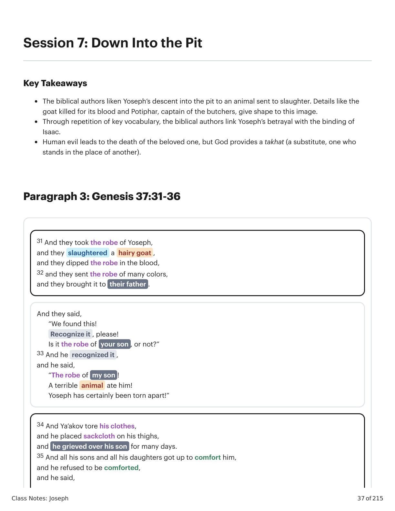
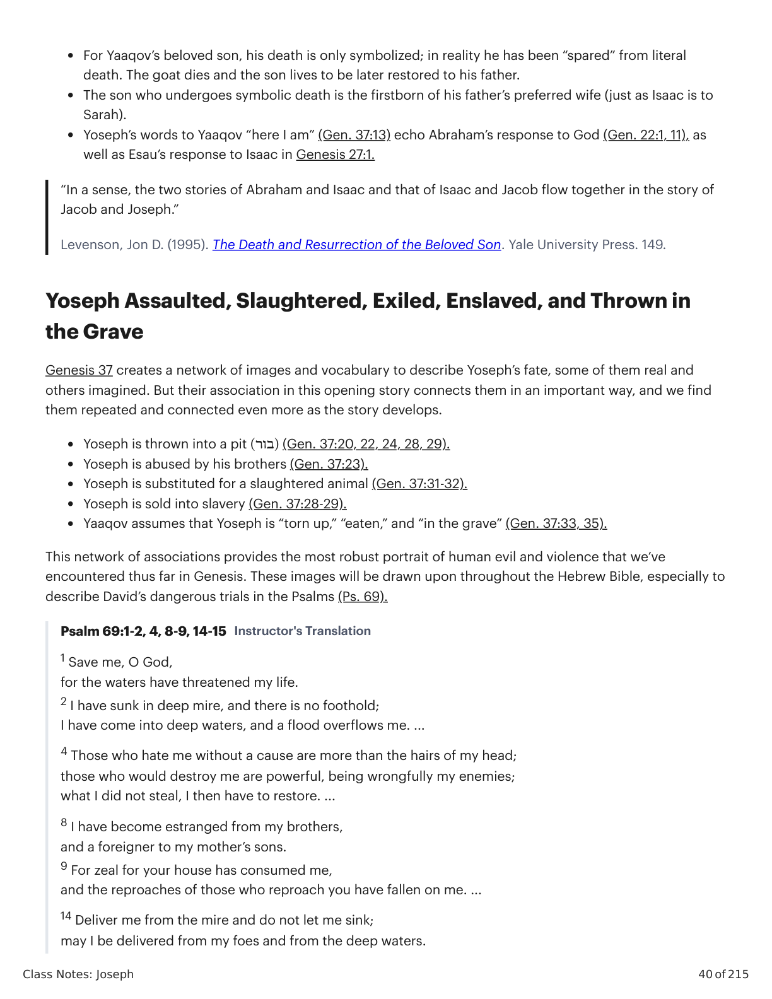

Gênesis 1:1-11:26. Tradução e Design Literário por Tim Mackie para BibleProject Classroom: Abraão (2021).Genesis 1:1-11:26. Translation and Literary Design by Tim Mackie for BibleProject Classroom: Abraham (2021).
Gênesis 1:1-11:26. Tradução e Design Literário por Tim Mackie para BibleProject Classroom: Abraão (2021).Genesis 1:1-11:26. Translation and Literary Design by Tim Mackie for BibleProject Classroom: Abraham (2021).
Class Notes: JosephClass Notes: Joseph
37 of 21537 of 215
Session 7: Down Into the PitSession 7: Down Into the Pit
Key TakeawaysKey Takeaways
The biblical authors liken Yoseph’s descent into the pit to an animal sent to slaughter. Details like theThe biblical authors liken Yoseph’s descent into the pit to an animal sent to slaughter. Details like the
goat killed for its blood and Potiphar, captain of the butchers, give shape to this image.goat killed for its blood and Potiphar, captain of the butchers, give shape to this image.
Through repetition of key vocabulary, the biblical authors link Yoseph’s betrayal with the binding ofThrough repetition of key vocabulary, the biblical authors link Yoseph’s betrayal with the binding of
Isaac.Isaac.
Human evil leads to the death of the beloved one, but God provides a takhat (a substitute, one whoHuman evil leads to the death of the beloved one, but God provides a takhat (a substitute, one who
stands in the place of another).stands in the place of another).
Paragraph 3: Genesis 37:31-36Paragraph 3: Genesis 37:31-36
31 And they took the robe of Yoseph,31 And they took the robe of Yoseph,
and they slaughtered a hairy goat ,and they slaughtered a hairy goat ,
and they dipped the robe in the blood,and they dipped the robe in the blood,
32 and they sent the robe of many colors,32 and they sent the robe of many colors,
and they brought it to their father .and they brought it to their father .
And they said,And they said,
“We found this!“We found this!
Recognize it , please!Recognize it , please!
Is it the robe of your son , or not?”Is it the robe of your son , or not?”
33 And he recognized it ,33 And he recognized it ,
and he said,and he said,
“The robe of my son !“The robe of my son !
A terrible animal ate him!A terrible animal ate him!
Yoseph has certainly been torn apart!”Yoseph has certainly been torn apart!”
34 And Ya’akov tore his clothes,34 And Ya’akov tore his clothes,
and he placed sackcloth on his thighs,and he placed sackcloth on his thighs,
and he grieved over his son for many days.and he grieved over his son for many days.
35 And all his sons and all his daughters got up to comfort him,35 And all his sons and all his daughters got up to comfort him,
and he refused to be comforted,and he refused to be comforted,
and he said,and he said,
Class Notes: JosephClass Notes: Joseph
38 of 21538 of 215
Genesis 37:31-36. Translation and Literary Design by Tim Mackie for BibleProject Classroom: Joseph (2022).Genesis 37:31-36. Translation and Literary Design by Tim Mackie for BibleProject Classroom: Joseph (2022).
The Deceptive Animal (Garment)The Deceptive Animal (Garment)
Adam and Eve are deceived by a spiritual being who takes up the animal disguise of a snake, and so they endAdam and Eve are deceived by a spiritual being who takes up the animal disguise of a snake, and so they end
up clothed with the skin of an animal and exiled from Eden (Gen. 3).up clothed with the skin of an animal and exiled from Eden (Gen. 3).
Yaaqov put on the skin of a slaughtered goat in order to deceive his father and gain the blessing, only to findYaaqov put on the skin of a slaughtered goat in order to deceive his father and gain the blessing, only to find
himself exiled from Canaan (Gen. 27).himself exiled from Canaan (Gen. 27).
Yoseph loses his royal robe, his brothers smear it with the blood of a slaughtered goat to deceive their father,Yoseph loses his royal robe, his brothers smear it with the blood of a slaughtered goat to deceive their father,
and Yoseph finds himself exiled from Canaan (Gen. 37).and Yoseph finds himself exiled from Canaan (Gen. 37).
A Beloved Son and a Slaughtered GoatA Beloved Son and a Slaughtered Goat
Notice how the cloak, bloodied by a slaughtered goat, becomes a twisted image of Yoseph’s status as theNotice how the cloak, bloodied by a slaughtered goat, becomes a twisted image of Yoseph’s status as the
beloved son who was supposed to be elevated to a place of rule and honor among the brothers.beloved son who was supposed to be elevated to a place of rule and honor among the brothers.
The capture and sale of Yoseph is replete with language from the Aqedah in Genesis 22, which is full of ironicThe capture and sale of Yoseph is replete with language from the Aqedah in Genesis 22, which is full of ironic
inversions and twists.inversions and twists.
Yaaqov, Yoseph, and a Goat in Genesis 37Yaaqov, Yoseph, and a Goat in Genesis 37
Avraham, Yitskhaq, and a Ram in Genesis 22Avraham, Yitskhaq, and a Ram in Genesis 22
Gen. 37:3 Yoseph is Yaaqov’s “son of old age”Gen. 37:3 Yoseph is Yaaqov’s “son of old age”
)(בן זקנים, whom he loves )(אהב more than his)(בן זקנים, whom he loves )(אהב more than his
brothers.brothers.
Gen. 21:2, 7; 22:2 Yitskhaq is Avraham’s “son of oldGen. 21:2, 7; 22:2 Yitskhaq is Avraham’s “son of old
age” )(בן לזקניו, whom he loves )(אהבage” )(בן לזקניו, whom he loves )(אהב
Gen. 37:13 Yaaqov calls for Yoseph, “and he said,Gen. 37:13 Yaaqov calls for Yoseph, “and he said,
‘Here I am’ )(הנני”‘Here I am’ )(הנני”
Gen. 22:1 God calls for Avraham, “and he said,Gen. 22:1 God calls for Avraham, “and he said,
‘Here I am’ )(הנני”‘Here I am’ )(הנני”
Gen. 22:7 Yitskhaq calls for Avraham, “and he said,Gen. 22:7 Yitskhaq calls for Avraham, “and he said,
‘Here I am’ )(הנני”‘Here I am’ )(הנני”
Gen. 22:11 The Angel of Yahweh calls for Avraham,Gen. 22:11 The Angel of Yahweh calls for Avraham,
“and he said, ‘Here I am’ )(הנני”“and he said, ‘Here I am’ )(הנני”
Rams and Goats in Genesis. Created by Tim Mackie for BibleProject Classroom: Joseph (2022).Rams and Goats in Genesis. Created by Tim Mackie for BibleProject Classroom: Joseph (2022).
“Surely, I will go down to my son , grieving , to She’ol!”“Surely, I will go down to my son , grieving , to She’ol!”
And his father wept for him ,And his father wept for him ,
36 but as for the Medanim , they sold him to Egypt,36 but as for the Medanim , they sold him to Egypt,
to Potiphar, official of Phar’oh,to Potiphar, official of Phar’oh,
captain of the butchers .captain of the butchers .
Class Notes: JosephClass Notes: Joseph
39 of 21539 of 215
Yaaqov, Yoseph, and a Goat in Genesis 37Yaaqov, Yoseph, and a Goat in Genesis 37
Avraham, Yitskhaq, and a Ram in Genesis 22Avraham, Yitskhaq, and a Ram in Genesis 22
Gen. 37:18 “And they [the brothers] saw )(ראהGen. 37:18 “And they [the brothers] saw )(ראה
him [Yoseph] from afar )(מרחק”him [Yoseph] from afar )(מרחק”
Gen. 22:4 “And Avraham saw )(ראה the placeGen. 22:4 “And Avraham saw )(ראה the place
from afar )(מרחק”from afar )(מרחק”
Gen. 37:20 “Let’s say an evil beast ate him )(אכלGen. 37:20 “Let’s say an evil beast ate him )(אכל
…”…”
Gen. 37:24-25 “And they took him )(לקח … andGen. 37:24-25 “And they took him )(לקח … and
they sat down to eat )(אכל bread …”they sat down to eat )(אכל bread …”
Gen. 22:6 “And Avraham took )(לקח … theGen. 22:6 “And Avraham took )(לקח … the
knife/eater )(מאכלת”knife/eater )(מאכלת”
Gen. 37:22 Reuven to brothers: “Don’t send out aGen. 37:22 Reuven to brothers: “Don’t send out a
hand against him )(ויד אל תשלחו בו”hand against him )(ויד אל תשלחו בו”
Gen. 37:27 Yehudah to brothers: “And our hand,Gen. 37:27 Yehudah to brothers: “And our hand,
don’t let it be against him )(וידני אל תהי בו”don’t let it be against him )(וידני אל תהי בו”
Gen. 22:10 “And Avraham sent out his handGen. 22:10 “And Avraham sent out his hand
)(וישלח … את ידו and he took the knife …”)(וישלח … את ידו and he took the knife …”
Gen. 22:12 Angel to Avraham: “Don’t send outGen. 22:12 Angel to Avraham: “Don’t send out
your hand against the lad )(אל תשלח ידך אל הנער”your hand against the lad )(אל תשלח ידך אל הנער”
Gen. 37:25 The brothers “lifted their eyes andGen. 37:25 The brothers “lifted their eyes and
looked, and behold, Yishmaelites”looked, and behold, Yishmaelites”
Gen. 22:4 “And Avraham lifted his eyes andGen. 22:4 “And Avraham lifted his eyes and
looked at the place from afar.”looked at the place from afar.”
Gen. 22:13 “And Avraham lifted his eyes andGen. 22:13 “And Avraham lifted his eyes and
looked, and behold, a ram afar, caught in thelooked, and behold, a ram afar, caught in the
thicket.”thicket.”
Gen. 37:31-32 The brothers take a goat and slay itGen. 37:31-32 The brothers take a goat and slay it
)(שחט as a substitute for their brother, and bring)(שחט as a substitute for their brother, and bring
its blood to their father.its blood to their father.
Gen. 22:10, 13 Avraham is about to slay )(שחט hisGen. 22:10, 13 Avraham is about to slay )(שחט his
son, but is able to offer a ram “as a substitute forson, but is able to offer a ram “as a substitute for
his son”his son”
Rams and Goats in Genesis. Created by Tim Mackie for BibleProject Classroom: Joseph (2022).Rams and Goats in Genesis. Created by Tim Mackie for BibleProject Classroom: Joseph (2022).
The affinities of the Yoseph story with the binding of Isaac in Genesis 22 are striking, though the relationshipThe affinities of the Yoseph story with the binding of Isaac in Genesis 22 are striking, though the relationship
is one of inversion in some important respects.is one of inversion in some important respects.
Abraham intends to slay Isaac, who is spared in the nick of time. // Yaaqov intends to send and receiveAbraham intends to slay Isaac, who is spared in the nick of time. // Yaaqov intends to send and receive
his son back soon but finds that he has been “slain.”his son back soon but finds that he has been “slain.”
Abraham offers the sacrificial ram in place of his son. // For Yaaqov, the goat and its blood take theAbraham offers the sacrificial ram in place of his son. // For Yaaqov, the goat and its blood take the
place of the son, because he has (so Yaaqov thinks) been mauled to death. The slain goat symbolizesplace of the son, because he has (so Yaaqov thinks) been mauled to death. The slain goat symbolizes
the loss of the beloved son.the loss of the beloved son.
Abraham intends to lose his son and receives him back. // Yaaqov intends to receive back his son andAbraham intends to lose his son and receives him back. // Yaaqov intends to receive back his son and
loses him.loses him.
But alongside these inversions, there are also profound continuities.But alongside these inversions, there are also profound continuities.
Class Notes: JosephClass Notes: Joseph
40 of 21540 of 215
For Yaaqov’s beloved son, his death is only symbolized; in reality he has been “spared” from literalFor Yaaqov’s beloved son, his death is only symbolized; in reality he has been “spared” from literal
death. The goat dies and the son lives to be later restored to his father.death. The goat dies and the son lives to be later restored to his father.
The son who undergoes symbolic death is the firstborn of his father’s preferred wife (just as Isaac is toThe son who undergoes symbolic death is the firstborn of his father’s preferred wife (just as Isaac is to
Sarah).Sarah).
Yoseph’s words to Yaaqov “here I am” (Gen. 37:13) echo Abraham’s response to God (Gen. 22:1, 11), asYoseph’s words to Yaaqov “here I am” (Gen. 37:13) echo Abraham’s response to God (Gen. 22:1, 11), as
well as Esau’s response to Isaac in Genesis 27:1.well as Esau’s response to Isaac in Genesis 27:1.
“In a sense, the two stories of Abraham and Isaac and that of Isaac and Jacob flow together in the story of“In a sense, the two stories of Abraham and Isaac and that of Isaac and Jacob flow together in the story of
Jacob and Joseph.”Jacob and Joseph.”
Levenson, Jon D. (1995). The Death and Resurrection of the Beloved Son. Yale University Press. 149.Levenson, Jon D. (1995). The Death and Resurrection of the Beloved Son. Yale University Press. 149.
Yoseph Assaulted, Slaughtered, Exiled, Enslaved, and Thrown inYoseph Assaulted, Slaughtered, Exiled, Enslaved, and Thrown in
the Gravethe Grave
Genesis 37 creates a network of images and vocabulary to describe Yoseph’s fate, some of them real andGenesis 37 creates a network of images and vocabulary to describe Yoseph’s fate, some of them real and
others imagined. But their association in this opening story connects them in an important way, and we findothers imagined. But their association in this opening story connects them in an important way, and we find
them repeated and connected even more as the story develops.them repeated and connected even more as the story develops.
Yoseph is thrown into a pit )(בור(Gen. 37:20, 22, 24, 28, 29).Yoseph is thrown into a pit )(בור(Gen. 37:20, 22, 24, 28, 29).
Yoseph is abused by his brothers (Gen. 37:23).Yoseph is abused by his brothers (Gen. 37:23).
Yoseph is substituted for a slaughtered animal (Gen. 37:31-32).Yoseph is substituted for a slaughtered animal (Gen. 37:31-32).
Yoseph is sold into slavery (Gen. 37:28-29).Yoseph is sold into slavery (Gen. 37:28-29).
Yaaqov assumes that Yoseph is “torn up,” “eaten,” and “in the grave” (Gen. 37:33, 35).Yaaqov assumes that Yoseph is “torn up,” “eaten,” and “in the grave” (Gen. 37:33, 35).
This network of associations provides the most robust portrait of human evil and violence that we’veThis network of associations provides the most robust portrait of human evil and violence that we’ve
encountered thus far in Genesis. These images will be drawn upon throughout the Hebrew Bible, especially toencountered thus far in Genesis. These images will be drawn upon throughout the Hebrew Bible, especially to
describe David’s dangerous trials in the Psalms (Ps. 69).describe David’s dangerous trials in the Psalms (Ps. 69).
Psalm 69:1-2, 4, 8-9, 14-15 Instructor's TranslationPsalm 69:1-2, 4, 8-9, 14-15 Instructor's Translation
1 Save me, O God,1 Save me, O God,
for the waters have threatened my life.for the waters have threatened my life.
2 I have sunk in deep mire, and there is no foothold;2 I have sunk in deep mire, and there is no foothold;
I have come into deep waters, and a flood overflows me. ...I have come into deep waters, and a flood overflows me. ...
4 Those who hate me without a cause are more than the hairs of my head;4 Those who hate me without a cause are more than the hairs of my head;
those who would destroy me are powerful, being wrongfully my enemies;those who would destroy me are powerful, being wrongfully my enemies;
what I did not steal, I then have to restore. ...what I did not steal, I then have to restore. ...
8 I have become estranged from my brothers,8 I have become estranged from my brothers,
and a foreigner to my mother’s sons.and a foreigner to my mother’s sons.
9 For zeal for your house has consumed me,9 For zeal for your house has consumed me,
and the reproaches of those who reproach you have fallen on me. ...and the reproaches of those who reproach you have fallen on me. ...
14 Deliver me from the mire and do not let me sink;14 Deliver me from the mire and do not let me sink;
may I be delivered from my foes and from the deep waters.may I be delivered from my foes and from the deep waters.
Class Notes: JosephClass Notes: Joseph
41 of 21541 of 215
15 May the flood of water not overflow me,15 May the flood of water not overflow me,
nor the deep swallow me up,nor the deep swallow me up,
nor the pit shut its mouth on me.nor the pit shut its mouth on me.
Reflection QuestionReflection Question
How do the biblical authors subtly foreshadow the hopeful deliverance coming at the end of the Yoseph storyHow do the biblical authors subtly foreshadow the hopeful deliverance coming at the end of the Yoseph story
as the brothers cast Yoseph into the pit?as the brothers cast Yoseph into the pit?

Diagram from page 1Diagram from page 1
| Yaaqov, Yoseph, and a Goat in Genesis 37 | Avraham, Yitskhaq, and a Ram in Genesis 22 |
|---|---|
| Gen. 37:18 “And they [the brothers] saw )(ראה him [Yoseph] from afar )(מרחק” | Gen. 22:4 “And Avraham saw )(ראה the place from afar )(מרחק” |
| Gen. 37:20 “Let’s say an evil beast ate him )(אכל …” | Gen. 22:6 “And Avraham took )(לקח … the knife/eater )(מאכלת” |
| Gen. 37:24-25 “And they took him )(לקח … and they sat down to eat )(אכל bread …” | Gen. 22:10 “And Avraham sent out his hand |
| Gen. 37:22 Reuven to brothers: “Don’t send out a hand against him )(ויד אל תשלחו בו” | )(וישלח … את ידו and he took the knife …” |
| Gen. 37:27 Yehudah to brothers: “And our hand, don’t let it be against him )(וידני אל תהי בו” | Gen. 22:12 Angel to Avraham: “Don’t send out your hand against the lad )(אל תשלח ידך אל הנער” |
| Gen. 37:25 The brothers “lifted their eyes and looked, and behold, Yishmaelites” | Gen. 22:4 “And Avraham lifted his eyes and looked at the place from afar.” |
| Gen. 37:31-32 The brothers take a goat and slay it | Gen. 22:13 “And Avraham lifted his eyes and looked, and behold, a ram afar, caught in the thicket.” |
| )(שחט as a substitute for their brother, and bring its blood to their father. | Gen. 22:10, 13 Avraham is about to slay )(שחט his son, but is able to offer a ram “as a substitute for his son” |
Diagram from page 2Diagram from page 2
| “In a sense, the two stories of Abraham and Isaac and that of Isaac and Jacob flow together in the story of | Jacob and Joseph.” |
|---|---|
| Psalm 69:1-2, 4, 8-9, 14-15 Instructor's Translation | Levenson, Jon D. (1995). The Death and Resurrection of the Beloved Son. Yale University Press. 149. |
| 1 Save me, O God, for the waters have threatened my life. | Yoseph Assaulted, Slaughtered, Exiled, Enslaved, and Thrown in the Grave |
| 2 I have sunk in deep mire, and there is no foothold; I have come into deep waters, and a flood overflows me. ... | Genesis 37 creates a network of images and vocabulary to describe Yoseph’s fate, some of them real and others imagined. But their association in this opening story connects them in an important way, and we find them repeated and connected even more as the story develops. |
| 8 I have become estranged from my brothers, and a foreigner to my mother’s sons. | Yoseph is thrown into a pit )(בור(Gen. 37:20, 22, 24, 28, 29). Yoseph is abused by his brothers (Gen. 37:23). Yoseph is substituted for a slaughtered animal (Gen. 37:31-32). Yoseph is sold into slavery (Gen. 37:28-29). Yaaqov assumes that Yoseph is “torn up,” “eaten,” and “in the grave” (Gen. 37:33, 35). |
| 14 Deliver me from the mire and do not let me sink; may I be delivered from my foes and from the deep waters. | This network of associations provides the most robust portrait of human evil and violence that we’ve encountered thus far in Genesis. These images will be drawn upon throughout the Hebrew Bible, especially to describe David’s dangerous trials in the Psalms (Ps. 69). |
| 4 Those who hate me without a cause are more than the hairs of my head; those who would destroy me are powerful, being wrongfully my enemies; what I did not steal, I then have to restore. ... | |
| 9 For zeal for your house has consumed me, and the reproaches of those who reproach you have fallen on me. ... |
Diagram from page 3Diagram from page 3

Diagram from page 4Diagram from page 4
Esses ciclos temáticos estabelecem um padrão narrativo, uma melodia temática, que se recicla a cada geração, desenvolvendo e avançando a melodia. A melodia básica é assim.These thematic cycles set up a narrative pattern, a thematic melody, that re-cycles with each generation, developing and advancing the melody. The basic melody goes like this.
Deus traz ordem/vida/bênção para fora do caos/águas/morte/maldição.God brings order/life/blessing out of chaos/waters/death/curse.
Palavras-chave
Vida, bênção, criar, estabelecer, semente, brotar, crescer, fruto, frutífero, multiplicar
Sete, plenitude, juramento (todos grafados שבע)
Imagens-chave: terra seca, refúgio, segurança, ordemKey words
Life, blessing, create, establish, seed, sprout, grow, fruit, fruitful, multiply
Seven, fullness, oath (all spelled שבע)
Key images: dry land, refuge, safety, order
Deus convida um parceiro humano escolhido a compartilhar da ordem/vida/bênção, o que coloca uma decisão/teste de sua confiabilidade sobre a mesa.God invites a chosen human partner to share in the order/life/blessing, which places a decision/test of their trustworthiness on the table.
O parceiro escolhido de Deus falha/passa no teste, geralmente envolvendo decepção/divisão/violência.God's chosen partner fails/succeeds the test, usually involving deception/division/violence.
A mesma pessoa/próxima geração enfrenta sua própria oportunidade e teste, e falha/passa, geralmente envolvendo uma expressão intensificada de decepção/divisão/violência.The same person/next generation faces their own opportunity and test and fails/succeeds, usually involving an intensified expression of deception/division/violence.
A sequência escalada de testes e fracassos leva a uma separação entre os personagens-chave, de modo que uma pessoa ou família se separa do resto e é escolhida por Deus para um novo futuro.The escalating sequence of tests and failures leads to a separation between the key characters so that one person or family splits off from the rest and is chosen by God for a new future.
Palavras-chave encontradas em Gênesis 2-3, 4-5, 6:1-4.Key words found in Genesis 2-3, 4-5, 6:1-4.
Des-criação: Deus provoca uma inversão do nº 1 acima, geralmente uma escalada de caos/morte/maldição.De-creation: God brings about an inversion of #1 above, usually an escalation of chaos/death/curse.
A partir dessa des-criação, Deus escolhe/preserva um remanescente/semente e inicia um novo movimento de re-criação através dele, muitas vezes marcado por alianças e trocadilhos sobre a raiz hebraica שבע, "sete/plenitude/juramento" ou "aliança" (ברית).Out of that de-creation, God chooses/preserves a remnant/seed and begins a new movement of re-creation through them, often marked by covenants and wordplays on the Hebrew root שבע, "seven/fullness/oath" or "covenant" (ברית).
Palavras-chave encontradas em Gênesis 6:5-9:17.Key words found in Genesis 6:5-9:17.
Gênesis 1:1-11:26. Tradução e Design Literário por Tim Mackie para BibleProject Classroom: Abraão (2021).Genesis 1:1-11:26. Translation and Literary Design by Tim Mackie for BibleProject Classroom: Abraham (2021).
De que maneiras você vê a história de Yoseph reencenando eventos dos capítulos iniciais de Gênesis?In what ways do you see Yoseph's story replaying events from the early chapters of Genesis?